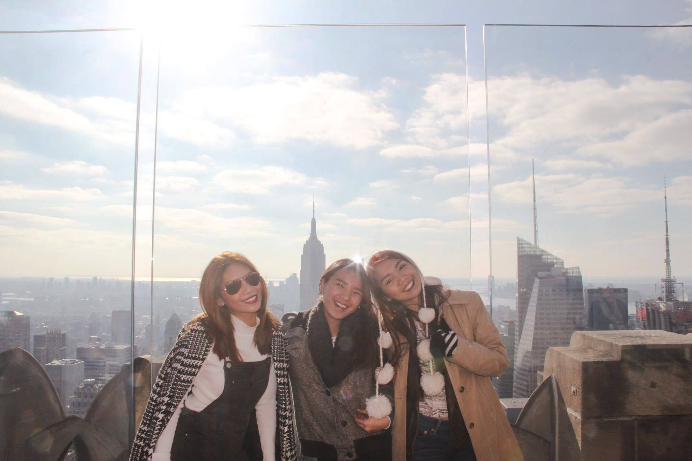

Take Me There!

Top 4 Most Visited Countries In The World
Book your next trip to one of these countries!
4. China
The land of the Great Wall of China, the Fiver Sacred Mountains, the Shaolin Temple, the Huangguoshu Waterfall, the Forbidden City, the Three Gorges, and other naturally, culturally and historically important sites, China is indeed one of the most coveted tourist destination in the world.
3. Spain
Historical cities and towns of the country like Barcelona and Madrid, the world-class resorts at the Mediterranean and Atlantic coasts of the country, the popular festivals like the Carnival and the Running of the Bulls, 15 national parks, well-developed winter tourism facilities, and a bustling nightlife, are some of the major tourist attractants in Spain. 13 Spanish cities are also regarded as UNESCO World Heritage Sites, attracting foreign visitors with their unique charm and significance.
2. USA
The United States is vast country serving a large number of attractions to the global travelers. Many of the U.S. cities like New York, Los Angeles, Las Vegas thrive with tourists all year round. Major natural attractions here include the Grand Canyon, Yellowstone National Park, the Alaskan subarctic wonders, the Hawaiian beaches and more. In 29 states of the country, the tourism industry is among the first three industries generating the maximum number of employment opportunities.
1. France
rance leads the world in the field of tourism with 83.7 million international tourists visiting the country in 2014. France hosts a variety of places of tourist interest like cities of cultural interest such as Paris, Lyon, Strasbourg, the Alpine mountains, ski resorts, beaches, picturesque French villages, spectacular gardens and parks, and more. The country is home to 37 UNESCO World Heritage Sites which are well recognized globally for their outstanding universal value.
Don't forget!
Whether this is your first trip or your hundredth trip, it’s always helpful to have a rundown of what items you may want to pack so you have a travel checklist. Bookmark this packing list, because you'll want to refer back to it to make sure you've thought of everything you might want to pack. We even have trip-specific resources at the end.
Take these steps in prepping for your next trip!
Step 1: Collect Important Travel Documents, Cash, and Credit Cards
Start by collecting all of your important documents in a travel document organizer (this travel organizer holds a passport, ID, seven credit cards, coins, documents, a boarding pass, and a pen!). This will help ensure everything you need to get from one place to the next is all in one place. Think about including the following documents:
Step 2: Prepare Your Personal Item Carry-On Bag
The next thing you’ll want to do is prepare your personal item carry-on bag with anything you’ll want with you on the flight. It’s always a good idea to make sure you have an outfit (or two) and a few essential toiletries in your personal item just in case your luggage is lost. If you’ll be traveling around to multiple destinations, make sure this bag has items to keep you cozy on any train, boat or bus rides. It's always nice to have a bag that's easy to access so you don't have to get in your main travel bag each time you need your eye mask. But remember, you’ll be carrying all of this, so keep it light.
Step 3: Choose Your Main Bag
Whatever you're planning, we recommend luggage that is versatile, lightweight and big enough to hold all your essentials. The most important decision you'll make as far as luggage is finding a piece that's versatile and can fit lots of gear while also being easy to carry. If you’ll be going through different types of terrain, or switching from airports to cobblestones, having a bag with the option to roll it or carry it like a backpack or duffel is handy.
Step 4: Organize Your Stuff
When you have many different types of activities and a variety of gear to pack in your suitcase, keeping everything organized can be a challenge. One of the best things you can do when you're packing for any trip, especially one that requires you to pack lots of layers, is to make sure you use packing organizers. Keeping your suitcase organized with packing organizers will make it easy to get from one place to the next without having to rearrange your entire bag every time you reach a new destination.
Step 5: Pack Your Toiletry Bag
If you’re carrying on, keep your toiletry bag light and TSA-compliant. The TSA’s 3-1-1 rule makes it easy to remember: liquids, gels, aerosols, creams, and pastes must be 3.4 ounces (100ml) or less per container and they must be in a 1 quart-sized, clear, plastic, zip-top bag. To make this as easy as possible for you, we have a set that includes four 3-ounce silicone bottles in a quart-sized clear pouch that’s wipeable and has a water resistant zipper.
A Whole New World?
Here's some tips to remember when going out to see the world.
1. Hydrate. Hydrate. Hydrate.
It is possible to become severely hydrated on long airplane rides due to the lack of humidity in airplane cabins, so it is very important to drink plenty of fluids, namely water. You may even consider staying away from alcohol and caffeinated drinks, such as coffee. It also is important to realize that your skin suffers from dehydration, so make sure to pack a good moisturizer or lotion. Lastly, if you wear contacts or have very dry eyes, make sure to bring along eye drops or contact solution.
2. Get a Good Night’s Rest
Although going on a big trip is super exciting, do your best to try and get at least 8 hours of sleep the night before traveling. It is difficult to truly get a lot of rest when you are traveling for 10+ hours and you need to be alert when checking in, during layovers, and once you get to your destination. If you are on a red eye, you might consider taking melatonin to help you relax before heading off to sleep. To help you get comfy, I’d suggest using the Cat Nap Rest Set, complete with a soft sleep mask and earplugs to block out distractions, either on the plane or in noisy hostel/hotel rooms, as well as a travel pillow so you can keep your head nice and comfortable!
3. Pack Ahead of Time
It can be stressful to leave all your packing for the last minute, so I recommend starting a week or so before so that the day of, you can feel confident that you have everything you need, washed and ready to pack! I love to feel as organized as possible, especially when packing my smaller items, such as necklaces which always get tangled together.
4. Stay Aware
One of the most important tips I can give is to be aware of your surroundings, especially when going to a foreign country that you’ve never been to before. While I personally love to wander, and discover new shops, café’s, and parks, it is still very important to always be aware. To keep my belongings safe, I use a money belt that fits securely around my waist, safe and out of sight from pick pockets. It also keeps all my important travel information, personal ID’s and debit/credit cards protected while going through security with RFID technology. Lastly, make sure that you have your phone with you always so that you can contact someone, or check Google maps if you were to get completely lost, or if you find yourself in a compromising situation.
5. Meet the Locals
One of my favorite aspects of traveling is meeting new people and making friends. There is so much to learn and discover through someone else’s perspective. But, also be careful when giving out specific information about who you are, where you are staying, or what your plans are. In general, just use good reasoning skills to feel out the situation.
6. Go Out of Your Comfort Zone
Be safe, but also make bold choices and have a lot of fun while you are traveling. Immerse yourself. Experiencing a new culture means new foods, new music, and new people. Try things you wouldn’t normally do, don’t shy away from opportunities because you are too scared or nervous – besides, those make for the best stories later when you get home. Embrace everything that you see, hear, smell, taste, and touch, and don’t be too quick to judge.